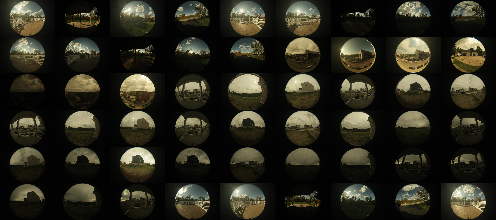
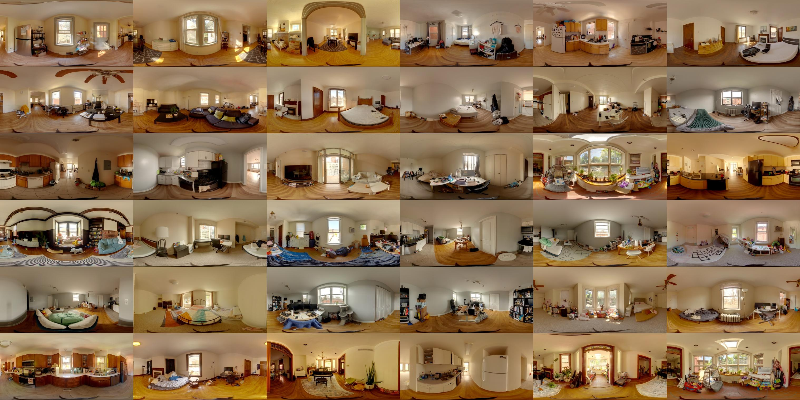

Guanzhou Ji
g.ji@northeastern.edu

I am an Assistant Teaching Professor in Software Engineering and Information Systems at Northeastern University – Seattle, College of Engineering, where I joined in Fall 2025. I currently teach Java programming, data structure, and Large Language Model applications. I also mentor graduate-level theses on Agentic AI, Multimodal Machine Learning, and 3D graphics.
I received my Ph.D. from Carnegie Mellon University in February 2025, focusing on indoor virtual staging, and later served as a Research Associate at the Robotics Institute, School of Computer Science. At the Illumination and Imaging Laboratory, my research focuses on 3D graphics, image-based rendering, and physics-based simulation, leading to the development of digital applications for scene understanding and interactive software systems.
I serve on the technical committees of the Illuminating Engineering Society (IES) and the International Commission on Illumination (CIE) and contribute to industry standards and imaging technologies. In April 2026, I joined the LEUKOS journal as an Associate Editor in the area of VR/AR and Machine Learning. I served as session chair for Computer Graphics at the International Symposium on Visual Computing (2025) and was a recipient of the Student and Emerging Professionals Scholarship (2022) from the U.S. Department of Energy (DOE) and the International Building Performance Simulation Association (IBPSA)–USA. My work has been featured in LD+A Magazine
News
2026.04: I joined as an Associate Editor (VR/AR and Machine Learning) for LEUKOS, the journal of the Illuminating Engineering Society.
2026.03: I joined the CIE Research Forum on glare database and Technical Committee on scalar and vectorial quantities computation.
2026.03: I moderated a webinar on game engines for real-time simulation and immersive visualization.
2026.02: I co-authored Recommended Practice: Lighting for Interior and Exterior Residential Environments, an American National Standard.
2026.02: I delivered a spotlight talk in the webinar Workflow and Tool Development.
2026.01: I joined Illuminating Engineering Society (IES) - Annual Lighting Conference Papers Subcommittee.
2025
2025.12: I served as a peer reviewer for the Special Report on Climate Change and Cities by the Intergovernmental Panel on Climate Change (IPCC), the United Nations body for assessing climate science.
2025.11: I served as the Session Chair for Computer Graphics and presented at the International Symposium on Visual Computing (ISVC) in Las Vegas.
2025.11: I moderated online webinar Data-Driven Design Communication.
2025.10: I contributed an AIAU course on Energy Modeling.
2025.08: I hosted the hands-on workshop Omnidirectional HDR Photography and served as a session speaker at IES25 in Anaheim, CA.
2025.08: I contributed a feature article to LD+A: magazine of the Illuminating Engineering Society (IES).
2025.08: I contributed an AIAU course on High-Performance Design.
2025.06: I served as a session speaker at AIA25 in Boston.
2025.04: I joined the International Symposium on Visual Computing (ISVC) Program Committee.
2025.04: I contributed the article Project StaSIO: the beauty of data visualization, featured in the IBPSA Newsletter.
2025.04: I served as moderator for IBPSA + AIA BPKC Education Webinar.
2025.03: I served as a judge for the 2025 IES - Illumination Awards (IA).
2025.01: I served as moderator and instructor for the AIAU online course - Advanced Design Strategies for Optimal Thermal Performance in High-Rise Building Envelopes.
2024
2024.10: I joined the International Commission of Illumination (CIE) as a technical committee 8-18 member.
2024.08: I gave a talk at the 22nd International Radiance Workshop in Salt Lake City, Utah.
2024.07: I joined as a technical committee member of the IES Technical Committee on Residential Lighting.
2024.07: I published a journal paper in Machine Vision and Applications.
2024.05: I co-taught the Impactful Data Visualization Workshop and moderated the Great Graphic Seminar at the SimBuild in Denver, CO.
Selected Publications
-
 Indoor Light and Heat Estimation from a Single Panorama
Indoor Light and Heat Estimation from a Single PanoramaInternational Symposium on Visual Computing (ISVC), 2025 Oral Presentation
Guanzhou Ji, Sriram Narayanan, Azadeh Sawyer, Srinivasa G. Narasimhan
[paper]
Dataset
-

Fisheye-Panorama HDR DatasetCalibrated HDR dataset includes 137 indoor panoramas and paired real-time outdoor fisheye images.
[link]
-

Indoor-Outdoor HDR Panorama DatasetCalibrated HDR dataset for 141 paired indoor-outdoor panoramas with furnished indoor scenes.
[link]
Outside Work
In my spare time, I like to explore golf courses and volunteer to teach teenagers golf at FirstTee.
I used to be a college athlete (110/400m hurdles)